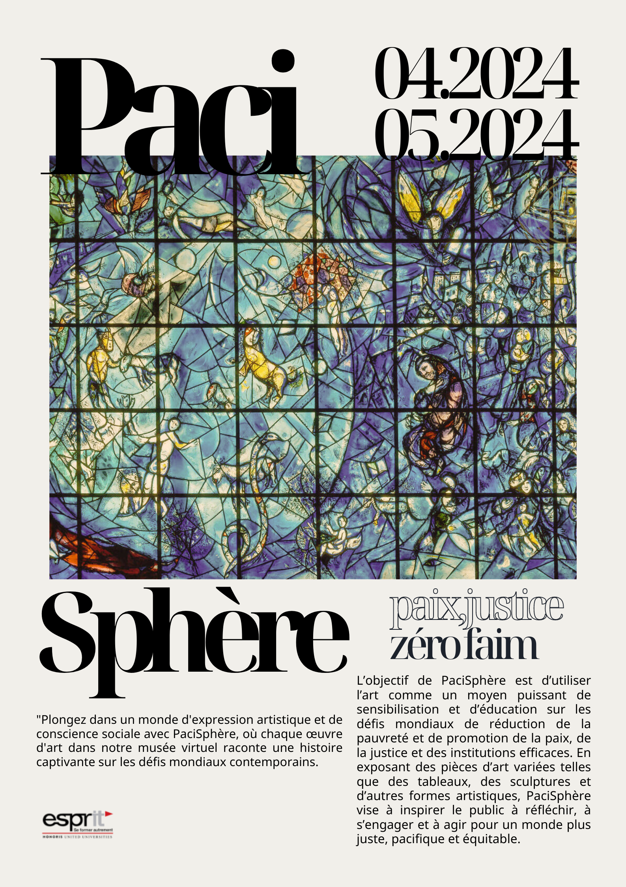
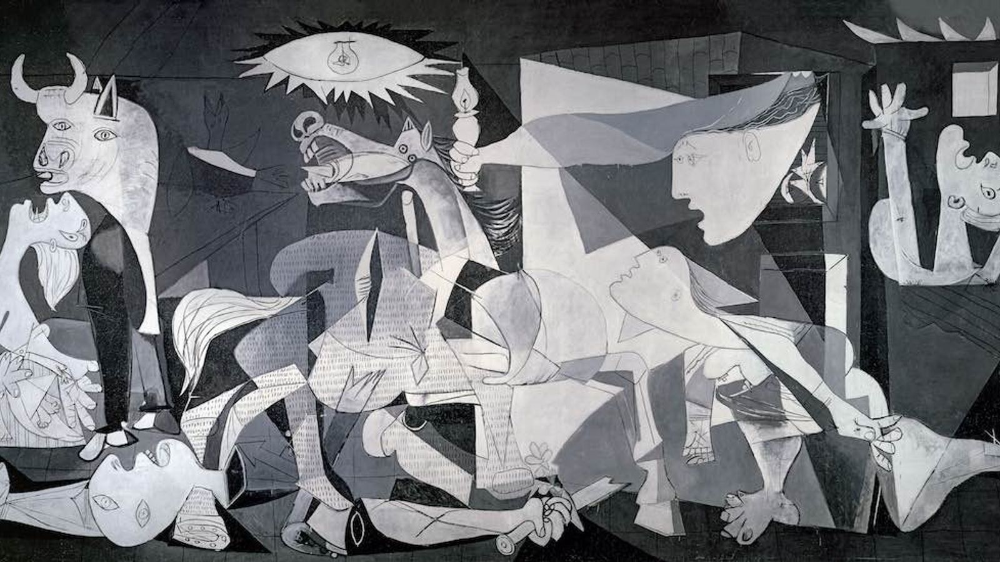
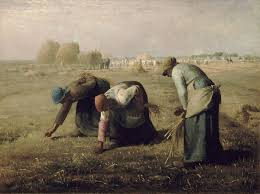
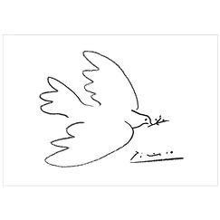
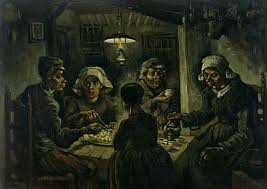
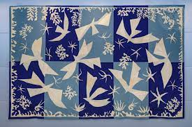

April 16, 2024
Découvrez l'immensité de notre musée virtuel, un espace novateur dédié à l'exploration, à l'apprentissage et à la promotion d'un monde harmonieux, où la paix, l'équité et la compréhension mutuelle prévalent.


Cette toile monumentale de Picasso est une dénonciation fervente du bombardement de Guernica, survenu le 26 avril 1937, pendant la guerre d'Espagne. Commandé par les nationalistes espagnols et exécuté par les troupes nazies allemandes et fascistes italiennes, ce bombardement a déclenché une propagande intense. Exposée dans de nombreux pays entre 1937 et 1939, l'œuvre de Picasso est rapidement devenue un symbole international de dénonciation de la violence franquiste et fasciste, ainsi que de l'horreur de la guerre en général.

Le tableau de Millet dépeint la vie rurale avec des détails abondants, mettant en avant la récolte du blé et la présence d'oiseaux prêts à se nourrir des grains oubliés. Cette scène évoque le thème du glanage, déjà présent dans la littérature de l'époque, avec des références à Balzac et à Jules Breton. Millet s'inspire probablement de ses observations de la vie quotidienne et de récits bibliques, notamment l'histoire de Boaz et Ruth, pour créer cette peinture authentique et empathique de la vie paysanne.

"La Liberté guidant le peuple" d'Eugène Delacroix : une allégorie puissante de la révolution de 1830 en France. Une femme symbolisant la liberté brandit le drapeau tricolore, menant le peuple dans la lutte pour leurs idéaux. Une œuvre emblématique de l'art français.

En février 1949, après la Seconde Guerre mondiale, un Congrès mondial des partisans de la paix s'est tenu à Paris, organisé par le Mouvement mondial des partisans de la paix. Picasso, membre du Parti communiste, a été sollicité pour un dessin par Louis Aragon, l'un des organisateurs. Inspiré par les pigeons blancs dans sa cage, Picasso a tracé le profil d'une colombe.

Cette peinture capture la simplicité et l'importance des cultures de base dans l'alimentation, rappelant que des ressources alimentaires fondamentales comme les pommes de terre peuvent contribuer a lutter contre la faim.

Les colombes, en bleu et blanc de l’ONU, représentent les aspirations de l’Organisation à la paix.